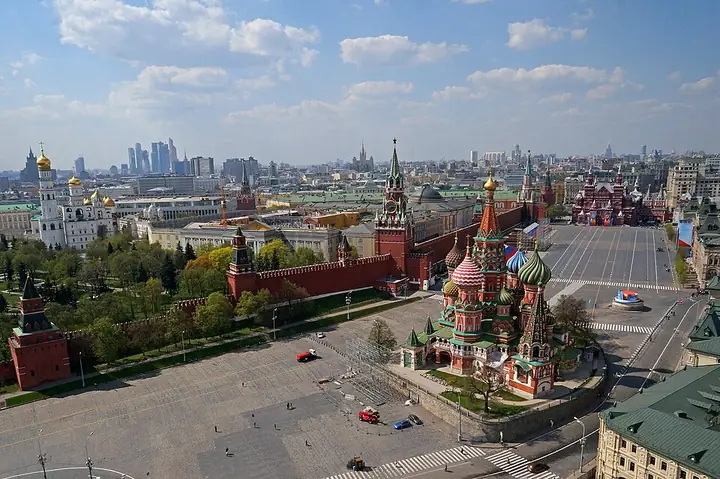

Фото: mos.ru, CC BY 4.0 · Wikimedia Commons
Площадь · ЦАО
Красная площадь
Главная площадь страны: Кремль, Василий Блаженный, ГУМ и Исторический музей в одном кадре.
- ₽ · до 1 500 ₽ на человека
- в 5 планах
Позвать сюда: Красная площадьОткрыть в каталоге: Красная площадьМаршрут до места: Красная площадь
Адрес и детали
- Адрес
- Красная площадь
Открыть на Яндекс Картах (в новой вкладке) - Метро
- м. Площадь Революции
- Округ
- Центр (ЦАО)
- Цена
- до 1 500 ₽ на человека
- Проверено
- работает — проверили в октябре 2026
Планы с этим местом 5
- Красная площадь · Площадь · м. Площадь Революции
- 9 минут пешкомМетрополь · Ресторан в историческом отеле
Прогулка по Красной площади, а с 13 до 17 по воскресеньям — знаменитый бранч-буфет «Метрополя» под витражным куполом с фонтаном.
Открыть план: Воскресный бранч в «Метрополе»Позвать сюда: Воскресный бранч в «Метрополе»
Фото: mos.ru, CC BY 4.0 · Wikimedia Commons
- Красная площадь · Площадь · м. Площадь Революции
- 3 минуты пешкомBosco Cafe · Кафе с видом на Кремль
Красная площадь утром, пока нет толп и очередей, а с 9 часов — завтрак в Bosco Cafe в ГУМе, где окна смотрят прямо на Кремль.
Открыть план: Красная площадь до толп и завтракПозвать сюда: Красная площадь до толп и завтрак
Фото: mos.ru, CC BY 4.0 · Wikimedia Commons
- Красная площадь · Площадь · м. Площадь Революции
- 9 минут пешкомВосход · Ресторан с видом на Кремль
Вечерняя Красная площадь и ужин с видом на Кремль в «Восходе» в «Зарядье».
Открыть план: Красная площадь и «Восход»Позвать сюда: Красная площадь и «Восход»
Фото: mos.ru, CC BY 4.0 · Wikimedia Commons
- Красная площадь · Площадь · м. Площадь Революции
- 2 минуты пешкомГУМ · Универмаг
Красная площадь, ГУМ с фонтаном и мороженое в стаканчике.
Открыть план: Красная площадь и ГУМПозвать сюда: Красная площадь и ГУМ
Фото: mos.ru, CC BY 4.0 · Wikimedia Commons
- Красная площадь · Площадь · м. Площадь Революции
- 2 минуты пешкомLimé Cafe · Кафе в ГУМе
Круг по Красной площади мимо Кремля и Василия Блаженного, а потом кофе и муссовые пирожные в кафе Limé на втором этаже ГУМа.
Открыть план: Красная площадь и кафе Limé в ГУМеПозвать сюда: Красная площадь и кафе Limé в ГУМе
Фото: mos.ru, CC BY 4.0 · Wikimedia Commons

Похожие рядом


Что ещё рядом


Как позвать
- Выбери план, место или событие — в карточке адрес, цены и маршрут в Яндекс Картах.
- Нажми «Позвать сюда» — соберётся приглашение-игра для свидания или голосование для компании.
- Отправь ссылку в любой мессенджер: тебе ответят, а компания отметит, куда и когда может. Бесплатно и без регистрации.